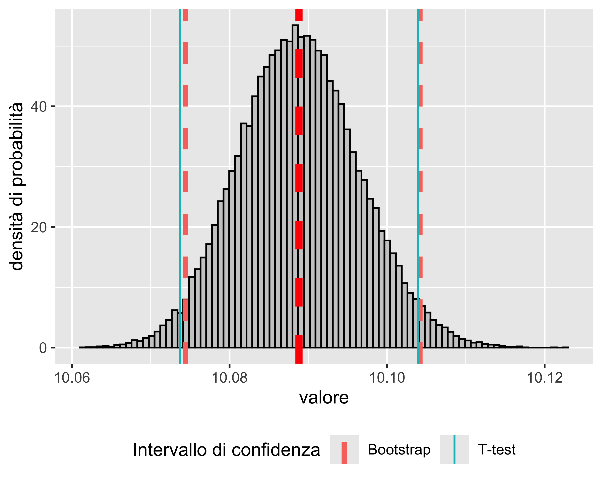

Tecniche di Bootstrap
Analisi Dati e Statistica, 2024–25

Paolo Bosetti
Università di Trento, Dipartimento di Ingegneria Industriale
Ultimo aggiornamento: 24/03/2025
Bootstrap
\(\renewcommand{\hat}[1]{\widehat{#1}}\) \(\renewcommand{\tilde}[1]{\widetilde{#1}}\) \(\renewcommand{\theta}{\vartheta}\)
To pull onself up by one’s bootstraps significa letteralmente sollevarsi da terra tirandosi per le cinghie degli stivali
In generale, significa costruire qualcosa da risorse apparentemente minime o inesistenti
In statistica, significa ricostruire una popolazione da un semplice campione
Tecniche di Bootstrap
Scopo: analizzare una particolare statistica \(\hat{\vartheta}\) simulando nuovi campioni a partire da un campione originario per effettuare dell’inferenza sulla statistica in questione
Si punta a inferire da \(\hat\vartheta\) il corrispondente parametro \(\vartheta\) della distribuzione.
La simulazione può essere fatta in due modi:
- Bootstrap non-parametrico: i campioni bootstrap vengono generati dal campione originario mediante campionamento con reinserimento
- Bootstrap parametrico i campioni bootstrap vengono generati da distribuzioni aventi una forma nota (e assunta corretta) e parametri stimati dal campione originario (tipicamente media e varianza).
Tecniche di Bootstrap
Ad esempio, supponiamo di voler stimare un determinato parametro \(\theta\) con lo stimatore \(\hat\theta=s(x)\), dove \(s(\cdot)\) è una qualche funzione dei dati campionari
\(\theta\) potrebbe essere il valore atteso e \(\hat\theta\) la media campionaria
Si noti che \(\hat\theta\) è a sua volta una variabile casuale. In quanto tale, \(\hat\theta\) avrà una sua distribuzione, ed indicheremo con \(G(\theta)=P(\hat\theta<\theta)\) la sua funzione di ripartizione (\(\mathrm{CDF}^-\)).
La distribuzione \(G\) è chiamata distribuzione campionaria della statistica \(\hat\theta\).
Tecniche di Bootstrap
La forma di \(G\) dipende da:
- la distribuzione originaria \(F\)
- la funzione \(s(\cdot)\) utilizzata per calcolare la statistica \(\hat\theta\)
- la dimensione del campione \(n\)
In alcuni casi—cioè per alcune (poche) combinazioni di \(F\), \(s(\cdot)\) e \(n\)—la distribuzione campionaria è nota in maniera esatta. Tuttavia, nella maggior parte dei casi essa è nota solo asintoticamente, cioè quando \(n\rightarrow +\infty\). In alcuni casi, addirittura, \(G\) può non essere nota nemmeno asintoticamente.
Esempio: media campionaria, distribuzione normale
Replichiamo 10 000 volte la media di un campione casuale normale di \(n\) elementi
Valutiamo la distribuzione delle 10 000 stime con un istogramma
Ripetiamo il processo per dimensioni del campione \(n \in \left<5, 10, 25, 50\right>\)
L’istogramma è pressoché perfettamente sovrapposto alla PDF di \(\mathcal{N}(\theta, \sigma^2/n)\), quale che sia il valore di \(n\)
Esempio: media campionaria, distribuzione uniforme
Se il campione proviene da una distribuzione non-normale (ad esempio uniforme) allora, grazie al teorema del limite centrale, la distribuzione della statistica campionaria è asintoticamente normale, cioè \(G(\theta)\rightarrow\mathcal{N}(\theta, \sigma^2/n)\) quando \(n\rightarrow +\infty\).
Ripetiamo l’analisi sopra fatta per il campione normale
Questa volta gli istogrammi, come previsto dal teorema del limite centrale diventano gradualmente più normali all’aumentare del numero di elementi di ciascun campione
Esempio: mediana campionaria
Consideriamo la mediana \(\tilde x\) come statistica, a partire da campioni uniformi
Si può dimostrare analiticamente come in questo caso la distribuzione campionaria di \(\hat\theta=\tilde x\) tende ad una distribuzione normale \(\mathcal{N}(\theta, 1/(4nf(\theta)^2))\), dove \(f(\cdot)\) è la PDF della normale standard, quando \(n\rightarrow +\infty\)
In questo caso, la convergenza è ancora più lenta della convergenza della media su un campione uniforme
La convergenza è comunque garantita dal teorema del limite centrale
E Quindi?
Effettuare inferenza su una statistica non sempre è analiticamente possibile
È possibile generare molti campioni in modo parametrico, cioè assumendo una distribuzione nota sulla base della quale generare campioni casuali
Tuttavia cambiare la distribuzione di partenza può modificare sensibilmente il risultato
Quindi: sia i metodi analitici che un bootstrap parametrico presentano alcuni limiti
Boostrap Non-Parametrico
Si assume che la distribuzione del campione sia ignota
Si generano \(R\) campioni a partire dal campione originario mediante campionamento con reinserimento
Dato che tutti gli elementi hanno la stessa probabilità di essere estratti dal campione originario, ogni campione di boostrap mantiene la stessa distribuzione (incognita)
Se \(R\) è grande (\(R > 10000\)) è possibile studiare la distribuzione del parametro in studio sui campioni di bootstrap per inferirne le proprietà
In particolare sarà possibile calcolarne:
- il valore atteso
- la varianza
- l’intervallo di confidenza
Procedura Generale
Procedura
Se \(x\) è un campione di \(n\) elementi provenienti da una distribuzione ignota:
- si ricampiona \(x\) con reinserimento, ottenendo \(x_i^*=\left<x^*_{i,1}, x^*_{i,2},\dots,x^*_{1,n}\right>\)
- si calcola la statistica \(\hat\theta^*_1 = s(x_1^*)\)
- si ripetono i primi due passi \(R\) volte, ottenendo un campione di \(\hat \theta^*_i,~i=1, 2, \dots, R\)
La distribuzione di bootstrap consiste quindi di \(R\) stime di \(\theta\) più la stima del campione originale \(\hat \theta\), cioè si ha il campione di \(R+1\) stime \(\left<\hat\theta,\hat\theta^*_1,\hat\theta^*_2,\dots,,\hat\theta^*_R\right>\).
Si possono ora stimare le proprietà del parametro \(\theta\) sulla base del campione di bootstrap:
- il valore atteso di \(\theta\) è stimata con la media del campione di bootstrap
- la varianza di \(\theta\) è stimata con la varianza del campione di bootstrap
- l’intervallo di confidenza di \(\theta\) è stimato dai quantili del campione di boostrap
Esempio
Consideriamo un campione di \(n=100\) elementi provenienti da una popolazione con distribuzione ignota
Dal grafico è evidente che la distribuzione non è normale
Vogliamo calcolare il valore atteso della media campionaria e il suo intervallo di confidenza
NOTA: se valesse l’ipotesi di normalità, l’intervallo di confidenza potrebbe essere calcolato dal T-test a un campione
Esempio
Costruiamo un campione di boostrap ricampionando \(R=5\times 10^{4}\) volte il campione originario, calcolando \(R+1\) volte la media campionaria
Riportiamo in istogramma le \(R+1\) stime della media
Il valore atteso della media è \(E(\bar x)=\bar{\hat \theta} = 10.0888\)
L’intervallo di confidenza per la media al 95% è calcolato dai quantili empirici di \(\hat \theta\): \[ L = Q^-(\hat \theta, (1-0.95)/2),~~~U = Q^+(\hat \theta, (1-0.95)/2) \]

NOTA: confrontando con l’intervallo calcolato dal T-test si nota che il limite inferiore è diverso: ciò è dovuto all’assimmetria della distribuzione del campione di base
Vantaggi della Tecnica Bootstrap
Il primo vantaggio della tecnica bootstrap rispetto alle tecniche analitiche lo abbiamo visto nell’esempio precedente:
- consente di effettuare inferenza su una statistica senza alcuna assunzione sulla distribuzione dei dati
È anche evidente, tuttavia, che per come è costruita
- la tecnica boostrap può essere applicata a qualsiasi statistica, incluse statistiche costruite per via numerica o comunque non esprimibili analiticamente
Esempio
Supponiamo di voler calcolare gli intervalli di confidenza su una statistica calcolata per via numerica: la regressione non-lineare mediante il metodo dei minimi quadrati
Il caso di interesse è la misura dell’istante in cui avviene il contatto tra due corpi, identificato mediante una misura di forza (rumorosa)
Il modello da regredire è: \[ f = \begin{cases} f_0 & t < t_0 \\ a t^2 + b t + c & t \geq t_0 \end{cases} \]
Dove \(f\) è la forza, \(f_0\) è il livello della forza prima del contatto, \(t_0\) è l’istante del contatto, e \(b, ~c\) parametri di forma della curva di contatto
Esempio
Siccome \(f(\cdot)\) deve essere continua con derivata continua, risulta \(2at_0+b=0\) e \(at_0^2+bt_0+c=f_0\) e quindi si hanno tre parametri: \[ f = \begin{cases} f_0 & t < t_0 \\ a t^2 - (2at_0)t + at_0^2+f_0 & t \geq t_0 \end{cases} \] Mediante regressione ai minimi quadrati e successivo bootstrap è possibile identificare l’istante di contatto e il relativo intervallo di confidenza per un assegnato livello di confidenza (in questo caso 95%)

Esempio
È anche possibile calcolare, per ogni valore del predittore \(t\), gli estremi di \(f\) considerando tutte le possibili combinazioni dei tre parametri \(f_0,~t_0,~a\)
In questo modo è possibile identificare una banda di confidenza sulla funzione interpolante (per un assegnato livello di confidenza)
paolo.bosetti@unitn.it — https://paolobosetti.quarto.pub/ADAS